| Name | Contact Info |
|---|---|
| Dingus | dingusassley |
| Cylon | cylon_ |
| Damo | damo3124 |
| UnkemptHerald | unkemptherald |
| Scrub | scrubadumb |
You can find us all in the #light-bowgun channel in the MHGH discord server:
MHGH Discord (invite link, opens in new tab).
Special thanks to:
AngBata, eichigo, kittibyou, kat, and the rest of the MHGH Bowgun community.
This chapter of the guide assumes that you have, at a minimum, made it to HR50+ and completed the builds in the progression guide. By this point, you should have at least a basic understanding of LBG’s mechanics and kit, as well as the ability to grind for any gear pieces or decos you may be missing.
All builds in this guide will assume the use of the Village food buff (+5 raw), as well as the Powercharm (+6 raw, acquired by completing the “As Gatekeepers” Optional Quest from Rex in Suja).
Builds also assume the use of Mega Demondrug (+7 raw), Might Seed (+10 raw), and Demon Powder (+10 raw). Despite this assumption, builds will function without these buffs unless specifically stated. All builds assume the use of Corrupted Mantle when available.
| Skill, Level, (Abbreviation) | Notes | |
|---|---|---|
| Critical Boost 1-5 | Increases critical damage up to 140% from 125% at level 5. Most builds will not reach level 5, though. | |
| Spread / Pierce / Normal Shots | 5% damage bonus to the respective ammo type. Stronger than Critical Boost if average affinity is below 64.5%. | |
| Ballistics 1-3 | Improves both close- and long-range Critical Distance. 2 points are mandatory for Spread, as it enables point-blank shots. Subjectively more valuable on all raw ammos than even Critical Boost. |
|
| Opening Shot 3 | Increases Reload speed by 10/15/30% and adds +5/10/15 raw to the first shot of a clip. | |
| Attack Boost | +3/5/7/8/9 and +0/0/0/2/4% raw. Not currently used in any builds. | |
Figure 2.1.1A, Raw Weapon Skill Priority Table | ||
| Skill, Level, (Abbreviation) | Notes | |
|---|---|---|
| Agitator 5 | High uptimes in hunts where raw is used, +20 raw and +15% affinity buff. | |
| Burst 1 | +6 Raw at level 1, almost no value at levels past 1. | |
| Weakness Exploit 2 | 10% Affinity on weak hitzones, +5% when hitting wounds. | |
| Ambush 3 | 15% Raw buff for 30 seconds, more valuable on fast hunts. | |
| Antivirus 3 | Used in every build, only offensive level 1 deco skill. | |
| Blindsider 1 | Used in spare lvl 1 slots. Flashes are OP. | |
Figure 2.1.1B, Raw Armor Skill Priority Table | ||
| Skill, Level, (Abbreviation) | Notes | |
|---|---|---|
| Fire / Water / Thunder / Ice Attack 3 | +20% element and +6 flat element. Mandatory. | |
| Critical Element 3 | 15% bonus elemental damage on critical hits. Elemental damage has a 1.0x critical multiplier without this skill. | |
| Opening Shot 1-3 | Increases Reload speed by 10/15/30%. +5/10/15 raw and +10% element to the first shot of a clip. | |
| Focus 3 | +5/10/20% gauge regen. Allows LBG to spend more time in RF mode. | |
| Tetrad Shot 1 | +3/6/10 raw and +5% element to the 4th and 6th shots of a clip. +8/10/12% affinity for the 4th shot onwards. Very little value beyond the first point. | |
| Ballistics 1-3 | Improves both close- and long-range Critical Distance by 10/15/25%. | |
| Rapid Fire Up | 5% damage bonus to Rapid-Fire shots. Higher priority on one gun when weapon swapping. | |
| Attack Boost | +3/5/7/8/9 and +0/0/0/2/4% raw. Can be a sidegrade in some talisman setups | |
Figure 2.1.2A, Elemental Weapon Skill Priority Table | ||
| Skill, Level, (Abbreviation) | Notes | |
|---|---|---|
| Burst 1 | +6 Raw at level 1, almost no value at levels past 1. | |
| Coalescence 3 | Extremely high value, 30% elemental buff on a 2 slot deco. | |
| Max Might 3 | Elemental builds allow for high MM uptime, high value for a 2 slot deco. | |
| Agitator 5 | Good uptime in many hunts, +20 raw and +15% affinity buff. | |
| Ambush 3 | Huge 30 second raw buff, used in shorter hunts. | |
| Weakness Exploit 5 | Used in place of Max Might in certain builds. | |
| Antivirus 3 | Used in every build, only offensive level 1 deco skill. | |
| Blindsider 1 | Used in spare lvl 1 slots. Flashes are OP. | |
Figure 2.1.2B, Elemental Armor Skill Priority Table | ||
To upgrade from a craftable charm, an RNG talisman must gain a useful weapon skill for free while keeping the same armor skills (e.g. Tetrad Shot 1 + Agitator 1 + lvl 3 armor slot) or gain enough equivalent points of useful weapon skills to outweigh the loss of one point of an armor skill (e.g. Rapid Fire Up + Agitator 1 + lvl 1 weapon slot).
Optimal charms will be listed in the Meta Build Guide section, but that exact charm is often not the only way to construct the same set. For example, a point of Agitator is typically interchangeable with a point of Burst and occasionally a point of Maximum Might or Coalescence.
Because of this, there are too many possible talismans to list every useful combination, so you’ll have to use your best judgment based on what you have in your box. Use the skill priority section above as reference, and when in doubt, put your talismans into the armor set searcher and let it do the thinking for you (wilds ass, opens in new tab).
In Wilds, armor and weapon skills have been split. This means that armor sets for each element are no longer needed, and you will instead only need to switch your weapon and weapon deco setups. This section will detail the best craftable options for Bowguns of each element as well as explain the mechanics of crafting Artian weapons, which are currently some of the strongest options for elemental bowguns. (For raw guns, the armor sets in Section 3 for their respective ammos will feature the corresponding weapon).
Running two guns of the same element in each loadout is recommended, as Rapid-Fire gauge is not shared between guns. This means that switching weapons mid-hunt will effectively give an immediate gauge refresh, although the secondary gun will need to recharge for up to 4 minutes before doing this again. This allows Light Bowgun to output unparalleled frontloaded damage in the first 60 seconds of a hunt. The below table shows which elemental guns to use for gun 1 and gun 2.
| Element | Gun 1 | Gun 2 |
|---|---|---|
 |
Fire Artian | Guardian Rathalos |
 |
Water Artian | Poison Artian |
 |
Thunder Artian OR Lagiacrus |
Thunder Artian |
 |
Ice Artian | Ice Artian OR Hirabami |
3.1A - Best Bowguns per Element |
Artians are typically preferred for Gun 1, as they are able to build around a Salvo jewel (see Section 3.2.2 Artian Decos for details). Lagiacrus’s bowgun is a higher DPS Thunder gun 1 than Artian if and only if all of the following are true:
- 1. a Rapid-Fire up talisman is used,
- 2. the armor build has room for 3 points of Thunder Resistance, and
- 3. ballistics is not relevant in the beginning of the hunt.
The subsections in this section cover the best craftable Bowgun options for each element. Decos are somewhat negotiable, but you should at a minimum be prioritizing:
- Element Attack 3
- Critical Element 3
- Opener 1
As of Title Update 2.5, status ammo now regens gauge. This introduces a new playstyle where Poison, and to a lesser extent Exhaust, ammo can be used to quickly refill Rapid Fire gauge.
As such, access to these status ammos is premium, to the point where Guardian Rathalos LBG is favored over Fire Artian. Hiramabi LBG did not surpass Artian in testing but is more comfortable due to its lack of reliance on committal elemental chasers to regen gauge. Zoh Shia and Blangonga bowguns are the best craftables if this playstyle is not used.
Fire
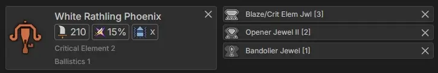Figure 3.1.1A, Guardian Rathalos Bowgun Bowgun Mods:
- Elemental Ammo Powder
- Elemental Boost Magazine
Figure 3.1.1B, Zoh Shia Bowgun Bowgun Mods:
- Elemental Ammo Powder
- Elemental Boost Magazine
Water
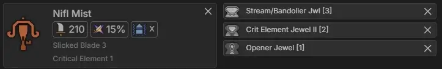Figure 3.1.1C, Mizutsune Bowgun Bowgun Mods:
- Rapid Fire Magazine
- Elemental Boost Magazine
Thunder
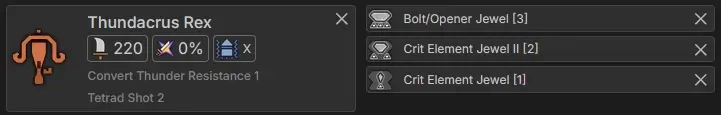Figure 3.1.1D, Lagiacrus Bowgun Bowgun Mods:
- Rapid Fire Magazine
- Elemental Boost Magazine
Ice
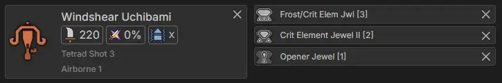Figure 3.1.1E, Hirabami Bowgun Bowgun Mods:
- Elemental Ammo Powder
- Rapid Fire Magazine
Figure 3.1.1F, Lagiacrus Bowgun Bowgun Mods:
- Elemental Boost Magazine
- Rapid Fire Magazine
Artian weapons are among the strongest options currently available for elemental builds in Wilds due to their potential for high stats combined with unrivaled slot economy. Artian weapons have to be forged using Artian parts, and have an RNG element in the form of reinforcement. While this may seem daunting at first, there are strategies that can be applied to make this a fairly simple process. This section will explain how to gather the materials and efficiently craft optimal Artian LBGs for each element.
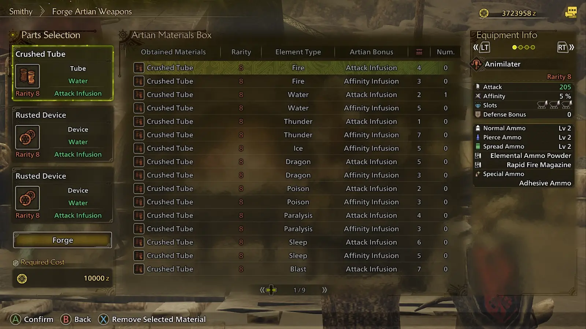 Figure 3.1.2A, the Artian Forging Interface
Artian weapons are forged at the smithy using parts obtained from hunting Tempered Monsters, of which there are four types:
- Tubes
- Devices
- Blades
- Discs
Artian LBGs are forged with one Tube and two Devices, and so Blades and Discs can be safely disregarded if you do not plan on forging Artian weapons of other weapon types.
Each Artian part consists of three properties:
- Rarity - 6, 7, or 8
- Element Type - Fire, Water, Thunder, Ice, Dragon, Paralysis, Poison, Sleep, or Blast
- Artian Bonus - Attack Infusion or Affinity Infusion
For the purposes of this guide, only rarity 8 Artian weapons will be considered. These can be forged only with Artian parts obtained melding or from 7★ and 8★ investigations.
When forging with two or more parts of the same element type, the resulting Artian LBG will be able to fire the corresponding elemental or status ammo. When three of the same type are used, the magazine capacity is increased. While using status parts does allow for use of the corresponding elemental ammo as well, Artian LBGs forged with elemental parts have a higher magazine capacity and are preferred for use in most builds.
Crafting using parts with the Attack Infusion gives the resulting weapon +5 Raw, and parts with the Affinity Infusion give the resulting weapon +5% Affinity. For LBGs, and most other weapon types, only Attack Infusion parts are used. In summary, when forging an Artian LBG for use, you should use three parts of the same desired element, all with the Attack Infusion, and all rarity 8.
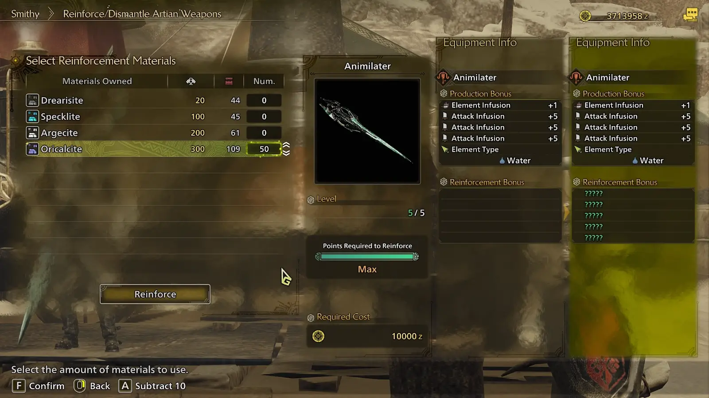 Figure 3.1.2B, the Artian Reinforcement InterfaceForging an Artian weapon is only the first step of the process, after which the weapon needs to be reinforced. Reinforcing an Artian weapon raises its level up to a maximum of 5, adding a new bonus with each level. These bonuses are determined via random seed when the weapon is forged, and can be one of the following for each level:
- Attack Boost - +5 Raw
- Affinity Boost - +5% Affinity
- Capacity Boost - +1 Ammo Capacity (maximum 2)
The ideal rolls for an Artian LBG are 3 Attack Boosts and 2 Capacity Boosts, with the priority being Capacity Boost. Each Affinity Boost is just over a 1% damage loss compared to an Attack Boost, having one or two Affinity Boosts on an Artian will still outperform craftable elemental Bowguns.
Artian weapons are reinforced using materials obtained from Festival Shares through Nata or the Smelting Foundry in Azuz, or by converting monster materials into Oricalcite at the Smelting Foundry. Each Artian will require a total of 50 Oricalcite to fully reinforce. If the reinforcement bonuses aren’t desirable, the weapon can be Dismantled to return all materials used in reinforcing it while gaining +1 Argecite ore.
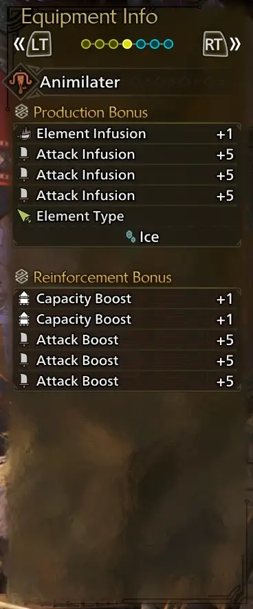 Figure 3.1.2C, "God Roll" Artian LBGBecause Artian reinforcements are determined when the weapon is forged and not when the weapon is reinforced, this allows for a simple strategy to maximize return of your time, Artian parts, and reinforcement materials:
- 1. Save the game.
- 2. Forge an Artian LBG using useless parts. These include status, Affinity infusion, or dragon parts.
- 3. Reinforce the Artian you crafted.
- 4.:
- a. If the reinforcement bonuses rolled aren’t usable, dismantle the weapon and repeat from Step 1.
- b. If the reinforcement bonuses rolled are usable for a build, return to the title menu without saving and then craft an Artian LBG using 3 parts with the desired Element plus Attack infusions, and then reinforce it.
Because they have 3-3-3 deco slots, Artian weapons have better skill economy than any currently craftable Bowguns. This subsection offers a few different deco setups that can be employed depending on which decos you have available.
Bowgun Mods used for Artian LBGs are Elemental Ammo Powder and Rapid Fire Magazine.
Figure 3.1.3A, Meta deco setup
Figure 3.1.3B, Budget deco setup
When employing gun switching, gun 1 does not need to run Focus since Gun 2 will be used for the majority of the hunt. The following is an example of a deco setup to maximize the damage of Gun 1.
Figure 3.1.3C, Gun 1 deco setup
 Open image in new tab
Fig. 3.2.1A - Craftable Pierce Ammo Build
Open image in new tab
Fig. 3.2.1A - Craftable Pierce Ammo Build
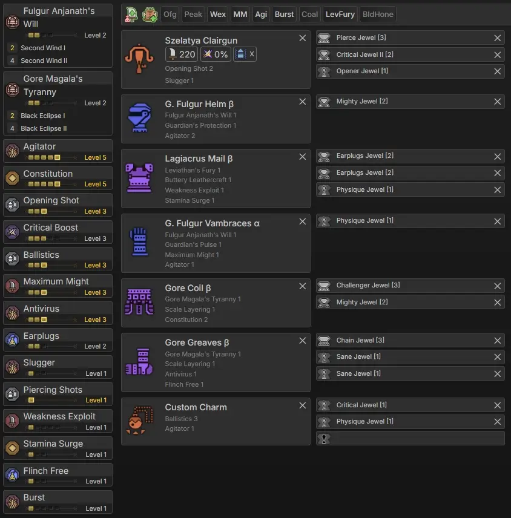 Open image in new tab Figure 3.2.1B, God Charm Pierce Ammo Build
One of the first ammo types anyone should try using is pierce ammo. Although overshadowed by Spread with the addition of Seregios’s LBG in TU2, Pierce ammo is still a comfortable 2nd place against Arkveld, while also being solid against many other monsters. The gun mods used here are Pierce Ammo Magazine and Rapid Fire Mod. The Mantle used is Corrupted Mantle.
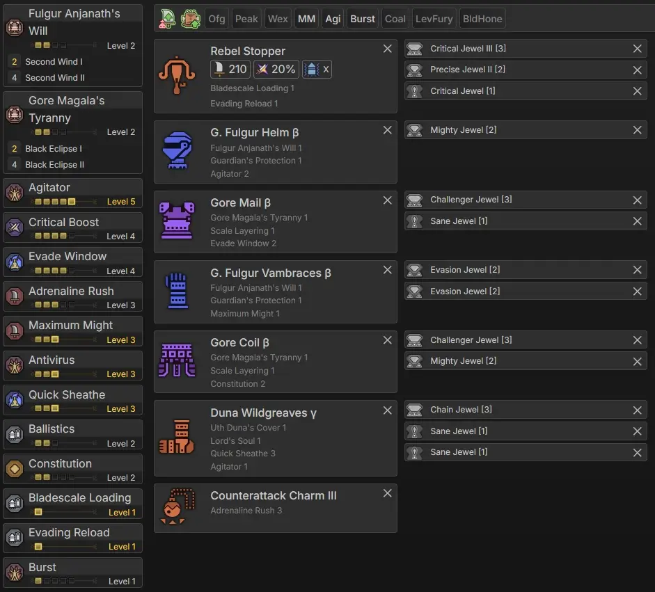 Open image in new tab Fig. 3.2.2A - Craftable Spread Ammo Build
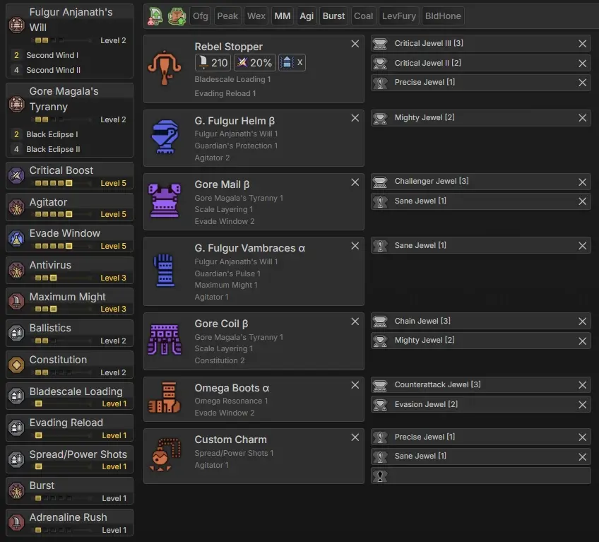 Open image in new tab Figure 3.2.2B, God Charm Spread Ammo Build
Spread is the strongest raw ammo type. However, due to the high recoil, it is also the most dangerous to play. It outdamages pierce in nearly every matchup and beats it by a considerable margin on smaller monsters when pierce won’t get as many ticks. The gun mods used here are Spread Ammo Magazine and Rapid Fire Mod. The Mantle used is Corrupted Mantle or Evasion Mantle.
The build can pick up a point of Weakness Exploit and a 2nd point of Adrenaline Rush if eating for Tumbler Meal Hi (Azuz Meal), at the cost of Moxie. Replace the boots with Regios Greaves.
Rathalos boots are 1:1 interchangeable with Omega boots.
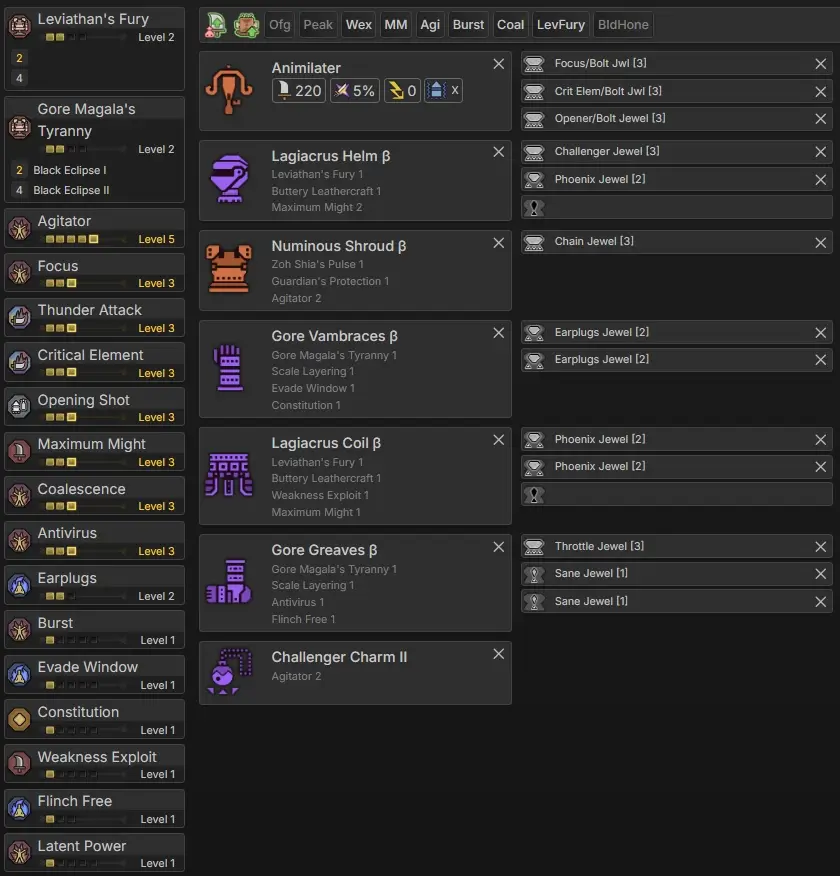 Open image in new tab Fig. 3.2.3A - Craftable Elemental Ammo Build
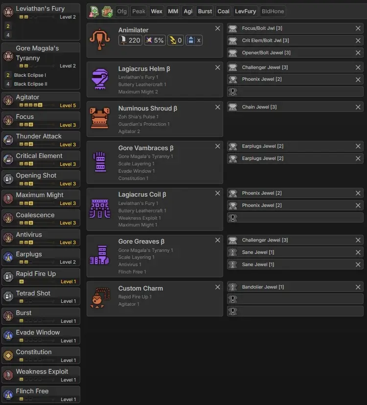 Open image in new tab Figure 3.2.3B, God Charm Elemental Ammo Build
Elemental ammo boasts the highest damage output of any of LBG’s ammos in all but 3 matchups (Arkveld, Zoh Shia, and Jin Dahaad) while also being incredibly easy to use. The gun mods and decorations used can be found in Section 3.1.1 Craftable Bowguns. The Mantle used is Corrupted Mantle.
| Element | Gun 1 | Gun 2 |
|---|---|---|
|
Fire Artian | Guardian Rathalos |
|
Water Artian | Poison Artian |
|
Thunder Artian OR Lagiacrus |
Thunder Artian |
|
Ice Artian | Hirabami OR Ice Artian |
3.2.3C - Best Bowguns per Element |
Figure 3.2.3C shows the optimal bowguns for each element. Note that this assumes the player will bring two bowguns of the same element to a hunt, opening the hunt with Gun 1, swapping to Gun 2 after gauge is spent (staying on it for the majority of the hunt), and swapping back to Gun 1 only to close out a hunt. Guardian Rathalos, Poison Artian, and Hirabami bowguns assume the use of poison or exhaust ammo to recharge gauge. This requires crafting up to 20 additional status ammo mid-hunt.
When running Artians for gun 1, decorations should be adjusted to Rapid Fire Up + Element Attack/Opener + Critical Element/Precise, and the other with the decorations shown in the build images above (or in Section 2.1 for craftables). Decorations on Gun 1 change to Element Attack/Precise + Opener/Precise + Critical Element/Precise if using a Rapid Fire Up god charm. If you do not have Artian guns made, the craftables are solid alternatives that will still effortlessly out-damage raw ammos (save for the 3 aforementioned monsters). If you do not have the exact combo decorations outlined in the build, use Element Attack 3, Critical Element 3, and Opener 3. Focus is the lowest priority of the skills on the weapon. Many craftable options will not be able to fit all this, but they should still be able to fit Element Attack 3, Critical Element 3, and Opener 1.
Artian weapons can also be created with Artian status parts. These give the elemental guns a status on top of their element at the cost of 1 less elemental ammo capacity. Although the lower magazine size amounts to a 3% DPS loss, having Paralysis or Sleep ammo for a guaranteed CC is useful. Poison ammo is particularly useful to regenerate rapid-fire gauge extremely quickly.
If using the Lagiacrus LBG, replace the empty lvl 1 slots and the point of Latent Power with 3 points of Thunder Resistance. A minor build optimization with Lagi A chest and Zoh waist is possible to gain 1 extra lvl 1 slot.
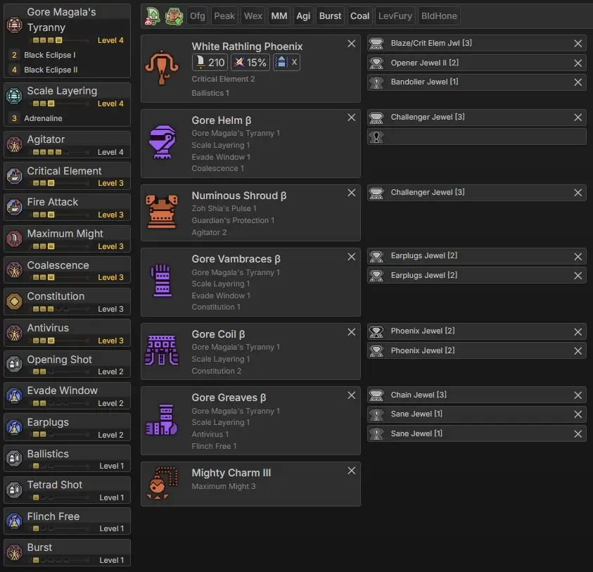 Open image in new tab Fig. 3.2.4A - Craftable Guardian Rathalos Build
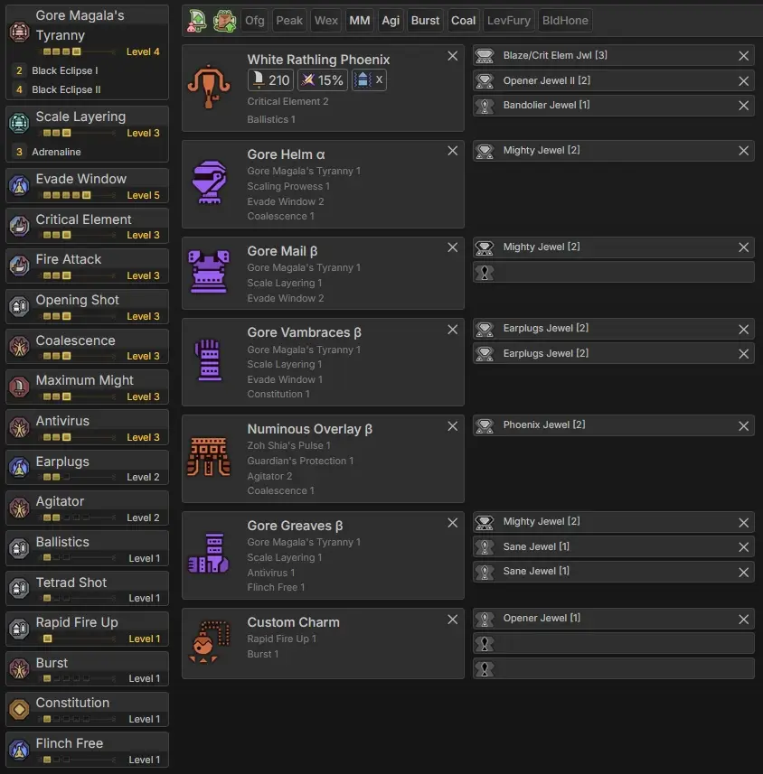 Open image in new tab Figure 3.2.4B, God Charm Guardian Rathalos Build
White Rathling Phoenix’s higher affinity warrants a slightly different build, as it frequently overcaps affinity with the 2pc Lagi metagolem element build.
Note that the build can gain an extra lvl1 slot if Rapid Fire up + Maximum Might 1 + Antivirus 1 (all base skills) is used on the talisman instead, but it could not be shown due to the limitations of the set builder.
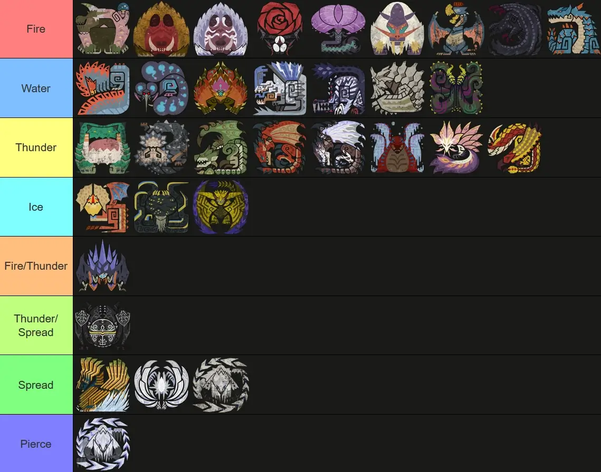 Open image in new tab Fig. 4.0A - Light Bowgun Matchup Chart
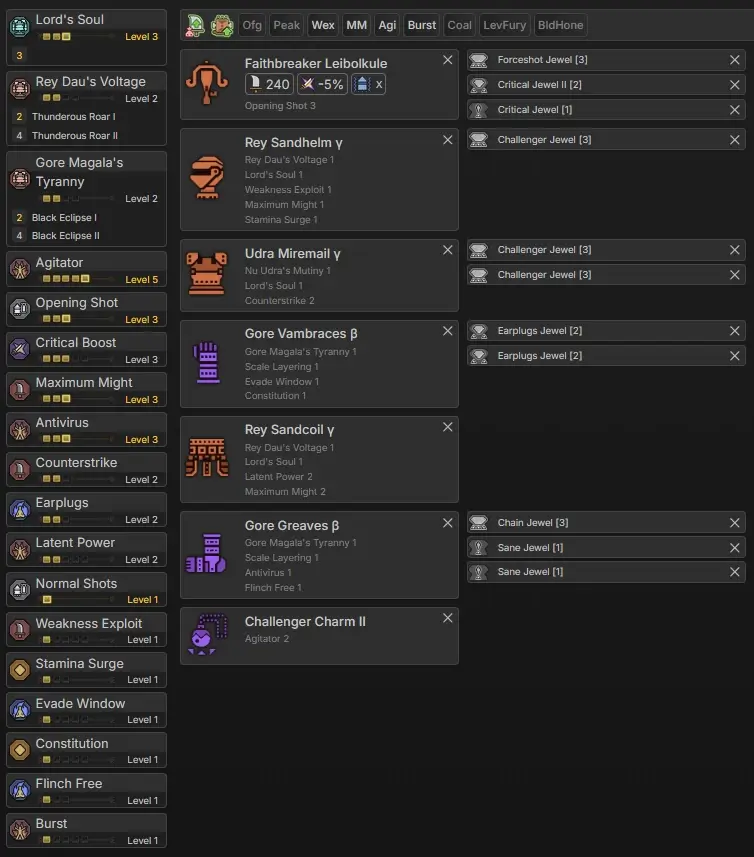 Open image in new tab Fig. 5.1A - Craftable Normal Ammo Build
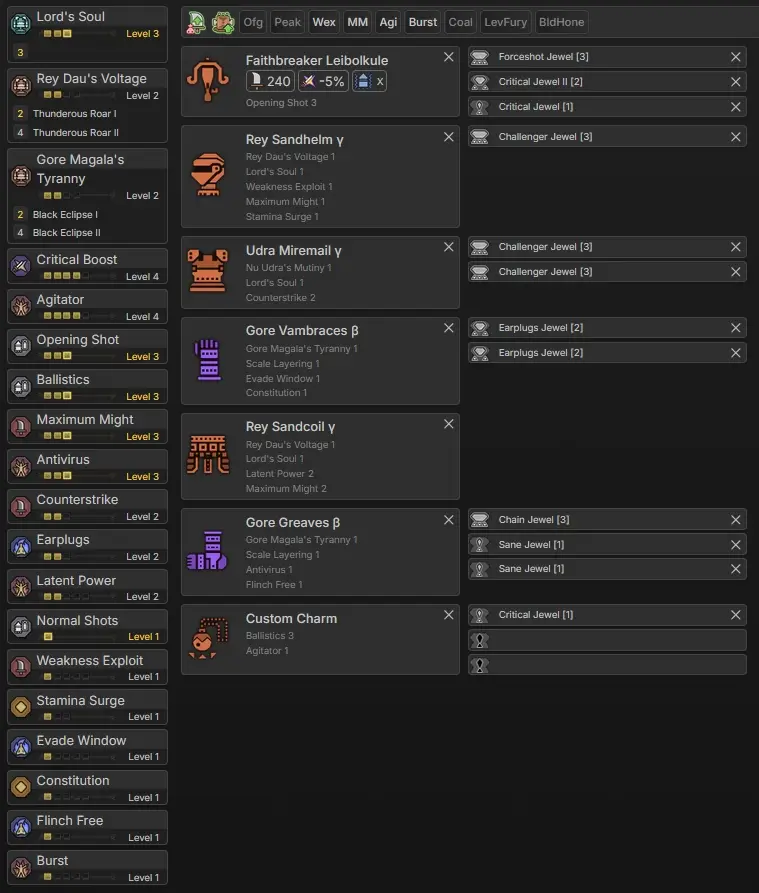 Open image in new tab Figure 5.1B, God Charm Normal Ammo Build
Normal ammo is not the strongest against any particular match up. However, it serves as a generalist build. The gun mods used here are Normal Ammo Magazine and Normal Ammo Magazine. The Mantle used is Corrupted Mantle.
Note that an Artian gun can be used for this build. It is slightly weaker but can have a useful status like paralysis or sleep.
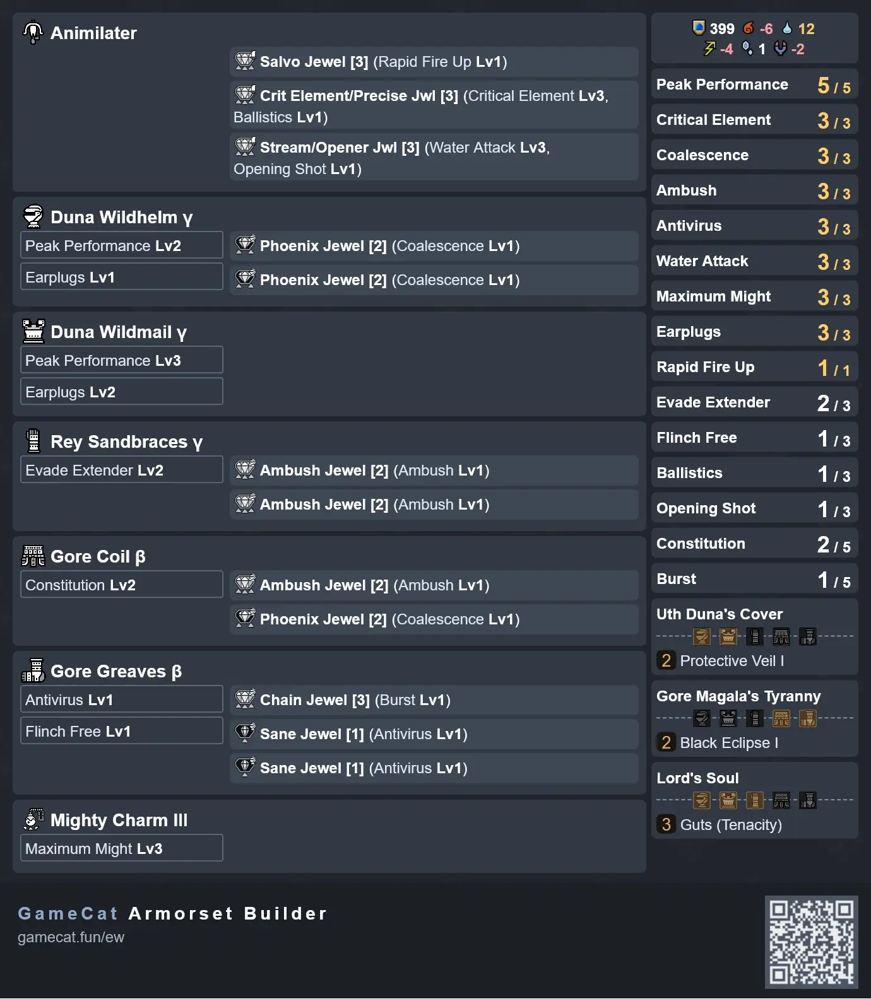 Open image in new tab Fig. 5.2A - Peak 5/Ambush 3 Craftable Charm Build Link (Opens in new tab)
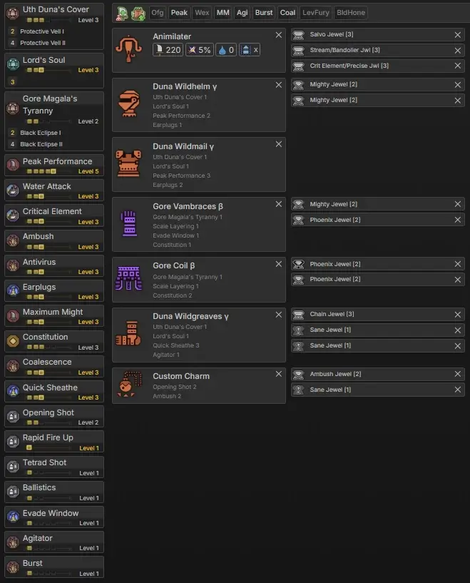 Open image in new tab Figure 5.2B, Peak 5 Ambush 3 God Charm
Not recommended against 9* monsters.
This build is designed for fast hunts where the monster does not have high enrage uptime (e.g. Guardians) or has low enough flinch thresholds that it physically cannot do anything (e.g., Gravios). Even for Tempered versions of these monsters, it’s still a very strong set that has the ability to compete with, and even beat out, the standard meta sets, provided sufficiently high Ambush uptime.
Monsters this set is already known to be strong on:
- All Tier 1 Tempered monsters (except Rathian)
- All Guardian Monsters
- Gravios
Sorry, no Grongigas here (yet).
Title Update 3 introduced the Omega raid, whose armor does not affect LBG sets outside of niche resentment builds. It also featured no weapon balance changes. However, this is when poison/exhaust tech was actually added to the guide, despite it technically being discovered in TU2.5. Arch-Tempered Nu Udra introduced some sidegrade sets that gain 2 points of Counterstrike in exchange for losing 2 points of Evade Window.
Title Update 2 brought 2 new guns, a new Spread gun and a new Thunder gun. The Seregios gun is the new best spread gun. The Lagiacrus gun is the best craftable thunder gun. They also come with new armor pieces that have niche uses. The Spread gun may also be used for Normal, but only if with very high Bladescale uptime.
Title Update 2.5 increased LBG’s elemental damage by 3%. It also adjusted Ballistics values for raw ammo, and in particular, finally enabled Spread to have point-blank shots at Ballistics 2. The update also introduced RNG talismans, which improved LBG’s damage ceiling by 2-5%. The rates are nowhere near as bad as in Rise. Finally, it added the ability for status ammos to regen gauge at varying rates depending on the type, which enables poison to refill the rapid fire gauge in a mere 5-6 seconds, with exhaust trailing slightly behind.
Title Update 1 brought us two new guns, a major nerf to the corrupted mantle and three new armor sets. The Corrupted Mantle nerf means Focus is now more useful than ever before on elemental builds, as it allows normal chasers to fill the gauge in three clips instead of four (editor’s note: normal chasers are no longer considered optimal for element). With this emphasis on Focus 3 for elemental sets, Artian bowguns are still the best for element. However, the Zoh Shia and Mizu guns are the best craftable options for fire, water, and thunder. The new armor brought slight improvements to meta sets. After TU1, Light Bowgun was still one of the strongest weapons in the game. However, it could fall slightly behind Heavy Bowgun in some Elemental matchups.
Title update 1.5 buffed Normal and Spread ammo. The buff to Spread ammo was particularly significant. Pierce ammo was changed to charge RF gauge slower. Overall, Spread became stronger than Pierce, albeit with a risky playstyle. Elemental ammo got a slight rework. Its maximum ticks were reduced to 6 (previously 7), but gained an increased modifier (from 0.55 to 0.58).
- Q: Why do you recommend Pierce/Spread/Normal Up over Crit Boost?
- A: Crit boost becomes stronger than these decorations once you have 65% or more affinity. However, you need to also factor in that many of your affinity skills will not have 100% uptime. So even if the builder said your affinity is 65%, your average affinity across a hunt will be lower, so you will get more overall value from pierce/spread/normal up. Fortunately some builds shown above have a mixture of both.
- Q: Why do some builds prioritize Agitator and others prioritize Weakness Exploit?
- Q: Why do you recommend 2x capacity boosts and the rest attack boost for Artian weapons?
- Q: How much stronger are Artian elemental weapons compared to their craftable counterparts?
- Q: How much damage do I lose if I get affinity rolls instead of attack rolls on my Artian weapons?
- Q: Why do you not recommend dragon ammo?
- Q: Why is Blindsider on all your sets?
- Q: How did you calculate all this stuff?
- MH Wilds Hub Builder, Here (opens in new tab)
- Gamecat Armorset Builder, Here (opens in new tab)
- Bowgun Data Sheet, Here (oGoogle Sheets, opens in new tab)
- Bowgun Weapon Tree Reference Sheet, Here (Google Docs, opens in new tab)
- Kiranico, Here (opens in new tab)
- Damo's Bowgun Calculator, Here (Google Sheets, opens in new tab)
- Wilds Set Search, Here (opens in new tab)
Possibly the most important section in this entire guide, as this would not have been possible without help from all of the names listed here.
Primary Contributors
- Dingus - Wrote the first edition of this guide and helped get everyone in touch so together a solid guide could be written. This guide would not be of such quality if Dingus had not put together a large team of theorycrafters. He also sat in VC for countless hours and gathered practical data that was used to test skills in calculations.
- Damo - His Matlab access and ability to streamline the calculations was invaluable in the process of writing this guide. Writing thousands of lines of code took days, but now allows us to compare different builds in a matter of seconds.
- UnkemptHerald - His access to information and data helped us get a massive headstart on theorycrafting. He is consistently involved in conversations concerning all aspects of the meta. He was also involved in a large amount of testing and read over all the code that was written by Damo.
- Cylon_ - He reformatted and rewrote the guide to follow Wiggler Standards of Style, as well as performed in game testing and gathered data to assist in calculations.
- Scrub - Helped to optimize the many iterations of the sets that preceded those in this document. Helped debug code, improved calculations. Gathered frame data. Edited written document.
YouTubers
- Angbata11 - Sharing ideas and helping the team to keep from being tunnel-visioned.
- Phemeto - Doing public testing of skills and sharing information.
- LordVietter - Spreading knowledge to a wider audience.
- Nyx - Testing new ideas on stream
- Kyle Woo/Rolltorest - LBG Freestyle speedrunner that helped brainstorm ideas and optimizations
- Mistilteinn - TA Wiki Rules speedrunner that helped us understand matchup info thanks to their runs
- Sarah MH - TA Wiki Rules LBG speedrunner that gave input to help with matchup info
- WaraBito - Active Highly Skilled LBG speedrunner
- Aco - Highly skilled HBG Freestyle speedrunner
- Tatsuffy - Highly skilled HBG speedrunner showing unique runs that open ideas for new info
- Dolores - Highly skilled HBG Freestyle speedrunner
Heavy Bowgun Friends
- Frostydios - Helping to test things when others were unavailable.
- Eichigo - Taking the responsibility and creating a temporary album that helped answer people’s questions while this guide was being worked on.
- Kat - Focusing on HBG and creating the original matchup sheet, and contributing to various conversations about the meta.
- Lasky - Assistance with testing and calculations.
- Jonboy - Answering questions when things were really busy.
Discord Servers
- MH Gathering Hall - Where the majority of the ideas were shared and tested.
- MH Hub - Where the ideas were shared for testing to a wider audience.
- Demon Tribe - Where the builds were tested with immediate feedback from close friends.